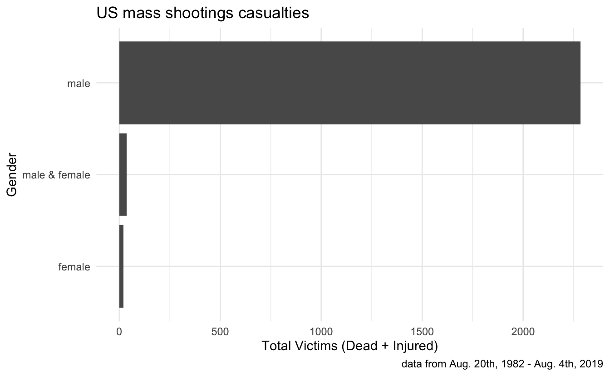

∑ { my parts }
R
politics
library(tidyverse)
terrorists <- readr::read_csv("https://docs.google.com/spreadsheets/d/e/2PACX-1vSqNhpFX_69klKgJCVobc3fjHYVE9pNosrDi9h6irLlCtSSLpR704iu9VqI7CxdRi0iKt3p1FDYbu8Y/pub?gid=956062857&single=true&output=csv")
terrorist_by_race
#> # A tibble: 7 × 6
#> race n fatalities injured total_victims `%`
#> <chr> <int> <dbl> <dbl> <dbl> <dbl>
#> 1 white 63 554 1067 1621 69.3
#> 2 other 5 90 115 205 8.77
#> 3 black 19 108 89 197 8.43
#> 4 asian 8 77 33 110 4.70
#> 5 unclear 6 40 61 101 4.32
#> 6 latino 10 44 33 77 3.29
#> 7 native american 3 19 8 27 1.15
terrorist_by_gender
#> # A tibble: 3 × 6
#> gender n fatalities injured total_victims `%`
#> <chr> <int> <dbl> <dbl> <dbl> <dbl>
#> 1 male 110 903 1380 2283 97.6
#> 2 male & female 1 14 21 35 1.50
#> 3 female 3 15 5 20 0.855my_parts == terrorist
#> [1] TRUE TRUE TRUE`I am` > sum(my_parts)#> [1] TRUE`I am` == sum(terrorist)FALSE
#> [1] FALSEwhite_males <- filter(terrorists,
race == "white",
tolower(gender) == "male",
!is.na(name))
pull(white_males, name)
#> [1] "Jordan Witmer" "Zephen A. Xaver" "Robert D. Bowers"
#> [4] "Jarrod W. Ramos" "Dimitrios Pagourtzis" "Travis Reinking"
#> [7] "Nikolas J. Cruz" "Timothy O'Brien Smith" "Kevin Janson Neal"
#> [10] "Devin Patrick Kelley" "Scott Allen Ostrem" "Stephen Craig Paddock"
#> [13] "Randy Stair" "Thomas Hartless" "Jason B. Dalton"
#> [16] "Robert Lewis Dear" "Noah Harpham" "Dylann Storm Roof"
#> [19] "Elliot Rodger" "John Zawahri" "Kurt Myers"
#> [22] "Adam Lanza" "Andrew Engeldinger" "Wade Michael Page"
#> [25] "James Holmes" "Ian Stawicki" "Scott Evans Dekraai"
#> [28] "Jared Loughner" "Robert Stewart" "Wesley Neal Higdon"
#> [31] "Steven Kazmierczak" "Robert A. Hawkins" "Tyler Peterson"
#> [34] "Sulejman Talović\u0087" "Charles Carl Roberts" "Kyle Aaron Huff"
#> [37] "Terry Michael Ratzmann" "Nathan Gale" "Douglas Williams"
#> [40] "Michael McDermott" "Larry Gene Ashbrook" "Day trader Mark O. Barton"
#> [43] "Eric Harris" "Kipland P. Kinkel" "Mitchell Scott Johnson"
#> [46] "Matthew Beck" "Dean Allen Mellberg" "Kenneth Junior French"
#> [49] "Gian Luigi Ferri" "John T. Miller" "Eric Houston"
#> [52] "Thomas McIlvane" "George Hennard" "Joseph T. Wesbecker"
#> [55] "Patrick Purdy" "Richard Farley" "William Cruse"
#> [58] "Patrick Sherrill" "James Oliver Huberty" "Abdelkrim Belachheb"
#> [61] "Carl Robert Brown"am_i <- function(terrorist) {
msg <- paste("am i ==", terrorist)
print(msg)
print(`am i` == terrorist)
}pull(white_males, name) %>%
walk(~am_i(.))
#> [1] "`am i` == Jordan Witmer"
#> [1] FALSE
#> [1] "`am i` == Zephen A. Xaver"
#> [1] FALSE
#> [1] "`am i` == Robert D. Bowers"
#> [1] FALSE
#> [1] "`am i` == Jarrod W. Ramos"
#> [1] FALSE
#> [1] "`am i` == Dimitrios Pagourtzis"
#> [1] FALSE
#> [1] "`am i` == Travis Reinking"
#> [1] FALSE
#> [1] "`am i` == Nikolas J. Cruz"
#> [1] FALSE
#> [1] "`am i` == Timothy O'Brien Smith"
#> [1] FALSE
#> [1] "`am i` == Kevin Janson Neal"
#> [1] FALSE
#> [1] "`am i` == Devin Patrick Kelley"
#> [1] FALSE
#> [1] "`am i` == Scott Allen Ostrem"
#> [1] FALSE
#> [1] "`am i` == Stephen Craig Paddock"
#> [1] FALSE
#> [1] "`am i` == Randy Stair"
#> [1] FALSE
#> [1] "`am i` == Thomas Hartless"
#> [1] FALSE
#> [1] "`am i` == Jason B. Dalton"
#> [1] FALSE
#> [1] "`am i` == Robert Lewis Dear"
#> [1] FALSE
#> [1] "`am i` == Noah Harpham"
#> [1] FALSE
#> [1] "`am i` == Dylann Storm Roof"
#> [1] FALSE
#> [1] "`am i` == Elliot Rodger"
#> [1] FALSE
#> [1] "`am i` == John Zawahri"
#> [1] FALSE
#> [1] "`am i` == Kurt Myers"
#> [1] FALSE
#> [1] "`am i` == Adam Lanza"
#> [1] FALSE
#> [1] "`am i` == Andrew Engeldinger"
#> [1] FALSE
#> [1] "`am i` == Wade Michael Page"
#> [1] FALSE
#> [1] "`am i` == James Holmes"
#> [1] FALSE
#> [1] "`am i` == Ian Stawicki"
#> [1] FALSE
#> [1] "`am i` == Scott Evans Dekraai"
#> [1] FALSE
#> [1] "`am i` == Jared Loughner"
#> [1] FALSE
#> [1] "`am i` == Robert Stewart"
#> [1] FALSE
#> [1] "`am i` == Wesley Neal Higdon"
#> [1] FALSE
#> [1] "`am i` == Steven Kazmierczak"
#> [1] FALSE
#> [1] "`am i` == Robert A. Hawkins"
#> [1] FALSE
#> [1] "`am i` == Tyler Peterson"
#> [1] FALSE
#> [1] "`am i` == Sulejman Talović\u0087"
#> [1] FALSE
#> [1] "`am i` == Charles Carl Roberts"
#> [1] FALSE
#> [1] "`am i` == Kyle Aaron Huff"
#> [1] FALSE
#> [1] "`am i` == Terry Michael Ratzmann"
#> [1] FALSE
#> [1] "`am i` == Nathan Gale"
#> [1] FALSE
#> [1] "`am i` == Douglas Williams"
#> [1] FALSE
#> [1] "`am i` == Michael McDermott"
#> [1] FALSE
#> [1] "`am i` == Larry Gene Ashbrook"
#> [1] FALSE
#> [1] "`am i` == Day trader Mark O. Barton"
#> [1] FALSE
#> [1] "`am i` == Eric Harris"
#> [1] FALSE
#> [1] "`am i` == Kipland P. Kinkel"
#> [1] FALSE
#> [1] "`am i` == Mitchell Scott Johnson"
#> [1] FALSE
#> [1] "`am i` == Matthew Beck"
#> [1] FALSE
#> [1] "`am i` == Dean Allen Mellberg"
#> [1] FALSE
#> [1] "`am i` == Kenneth Junior French"
#> [1] FALSE
#> [1] "`am i` == Gian Luigi Ferri"
#> [1] FALSE
#> [1] "`am i` == John T. Miller"
#> [1] FALSE
#> [1] "`am i` == Eric Houston"
#> [1] FALSE
#> [1] "`am i` == Thomas McIlvane"
#> [1] FALSE
#> [1] "`am i` == George Hennard"
#> [1] FALSE
#> [1] "`am i` == Joseph T. Wesbecker"
#> [1] FALSE
#> [1] "`am i` == Patrick Purdy"
#> [1] FALSE
#> [1] "`am i` == Richard Farley"
#> [1] FALSE
#> [1] "`am i` == William Cruse"
#> [1] FALSE
#> [1] "`am i` == Patrick Sherrill"
#> [1] FALSE
#> [1] "`am i` == James Oliver Huberty"
#> [1] FALSE
#> [1] "`am i` == Abdelkrim Belachheb"
#> [1] FALSE
#> [1] "`am i` == Carl Robert Brown"
#> [1] FALSE`I am` > sum(my_parts)